Redmoon Traum
A virtual journey where reality and dream merge, inspired by psychoanalysis and surrealist art.
Redmoon Traum is a virtual journey that transcends the boundary between reality and imagination, bringing together psychoanalysis, surrealist art and new technologies.
Inspired by the reflections of psychoanalyst Carl Gustav Jung and the dreamlike visions of surrealist artist Max Ernst, the project explores the infinite landscape of the human unconscious. It offers an immersive experience that invites the user to travel through the psyche, moving among symbols, archetypes and surreal narratives.
A virtual universe where reality and dream merge, the rational meets the irrational, and introspection becomes an adventure.
The experience is divided into four main chapters, connected through portals. Each chapter is designed to guide the player through a specific stage in the exploration of the unconscious.
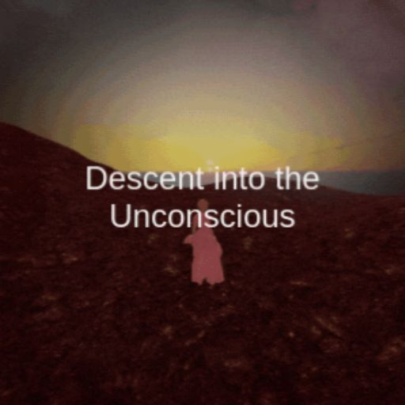
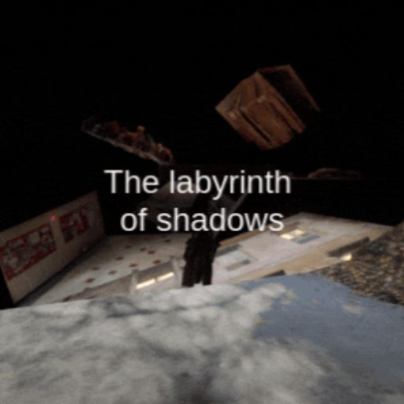
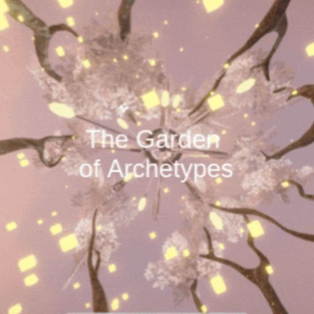
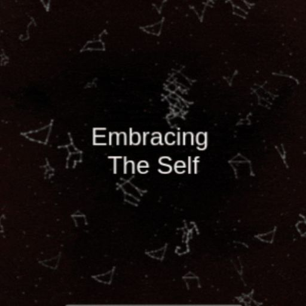
Chapter 1 — Descent into the Unconscious
Under the twilight veil of a mysterious forest, the first chapter of Redmoon Traum invites players to begin their exploration of the unconscious. The forest becomes a powerful metaphor for entering the unknown parts of the self.
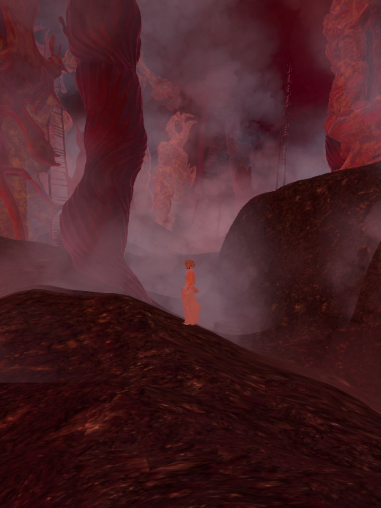
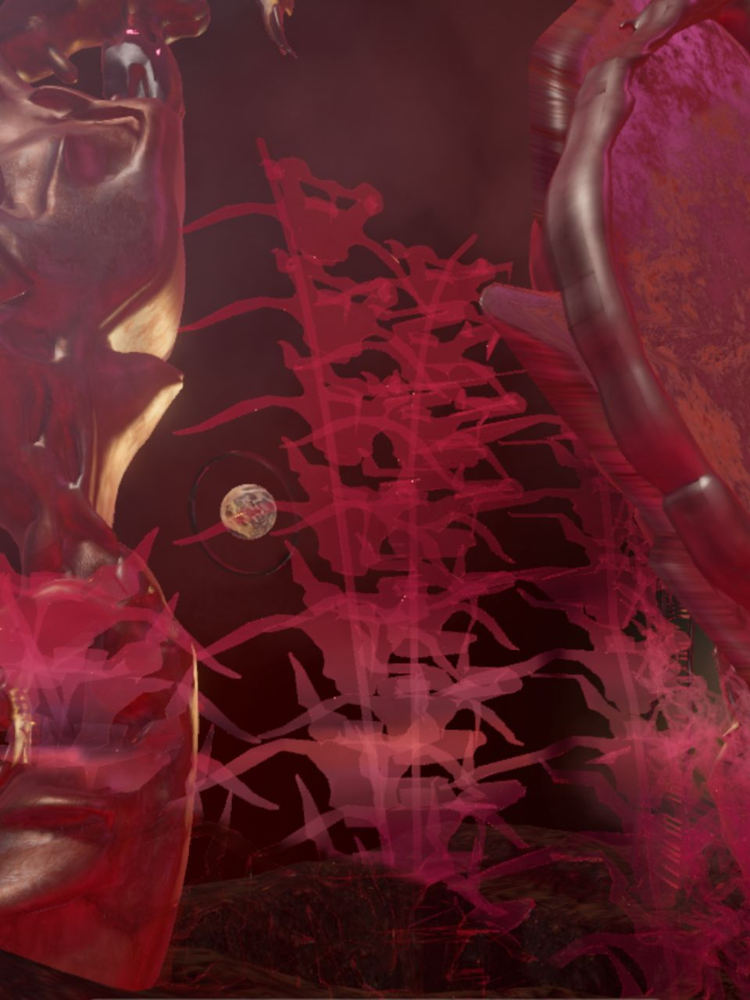
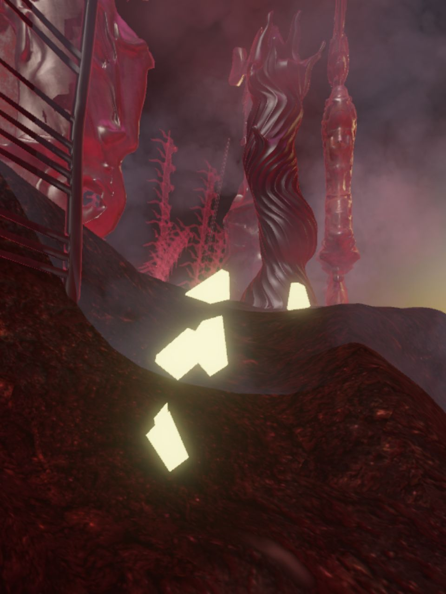
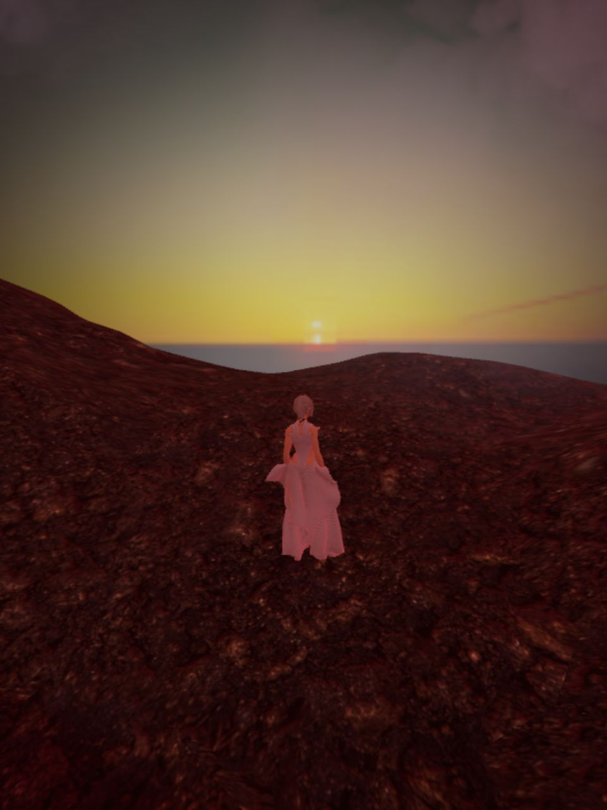
Here, where ethereal light blends with shadow, players collect fragments of a mirror along the path. Each fragment reflects light and slowly disperses the mist, revealing the way towards an underground labyrinth, a symbolic descent into the hidden depths of the mind.
Chapter 2 — The Labyrinth of Shadows
In the Labyrinth of Shadows, the journey becomes more intimate and obscure. Players move through a fractured landscape of floating platforms and unstable spaces, symbolic of fears, repressed memories and the hidden parts each person carries within.
The labyrinth does not only challenge the player; it also reveals. With each uncertain step, the path changes, reflecting the inner struggle of recognising and accepting the darker aspects of the self. Overcoming the labyrinth means finding a staircase made of fragments of reality, a possible way out towards acceptance, growth and the next stage of the inner journey.
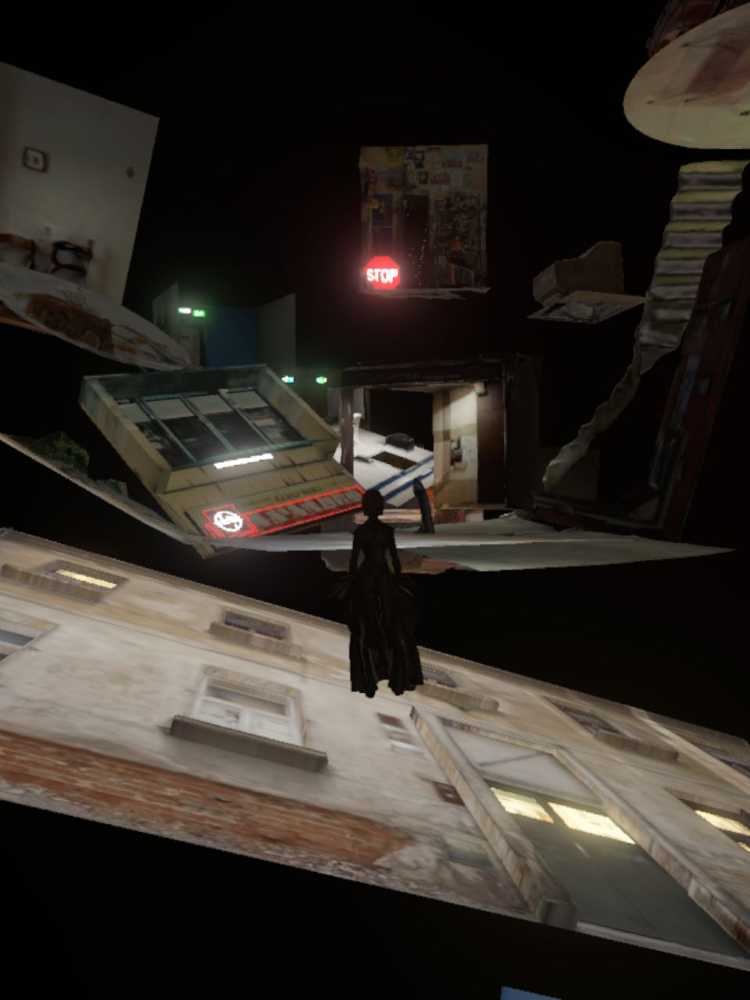
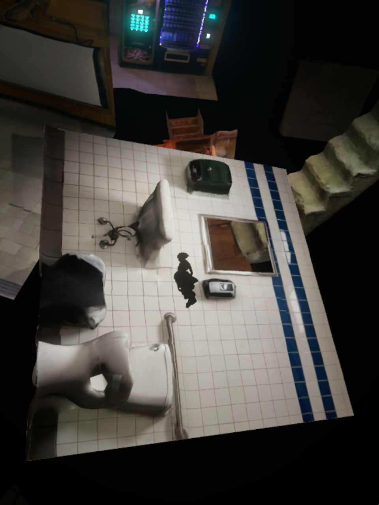
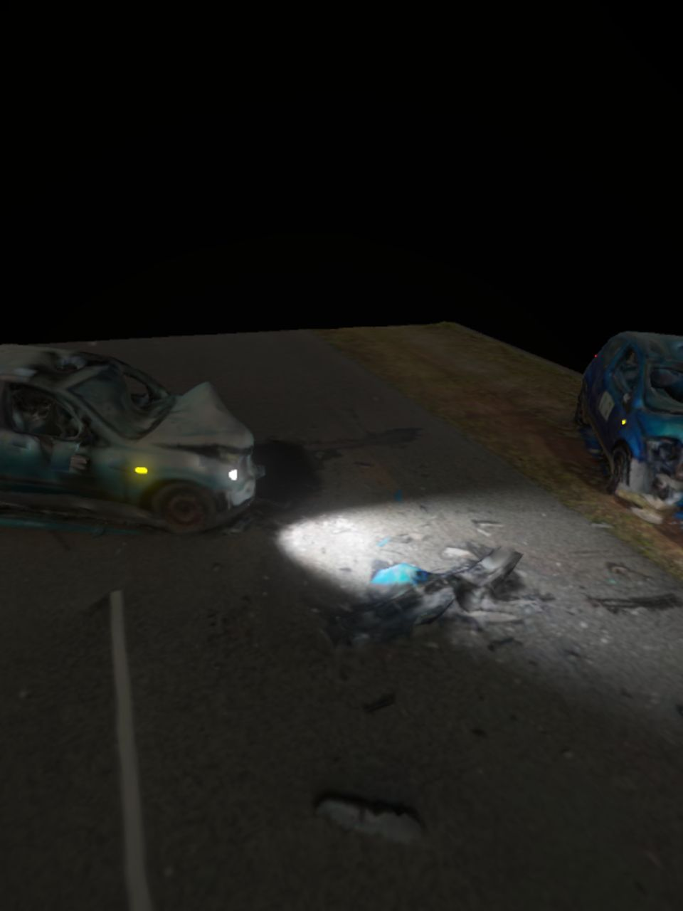
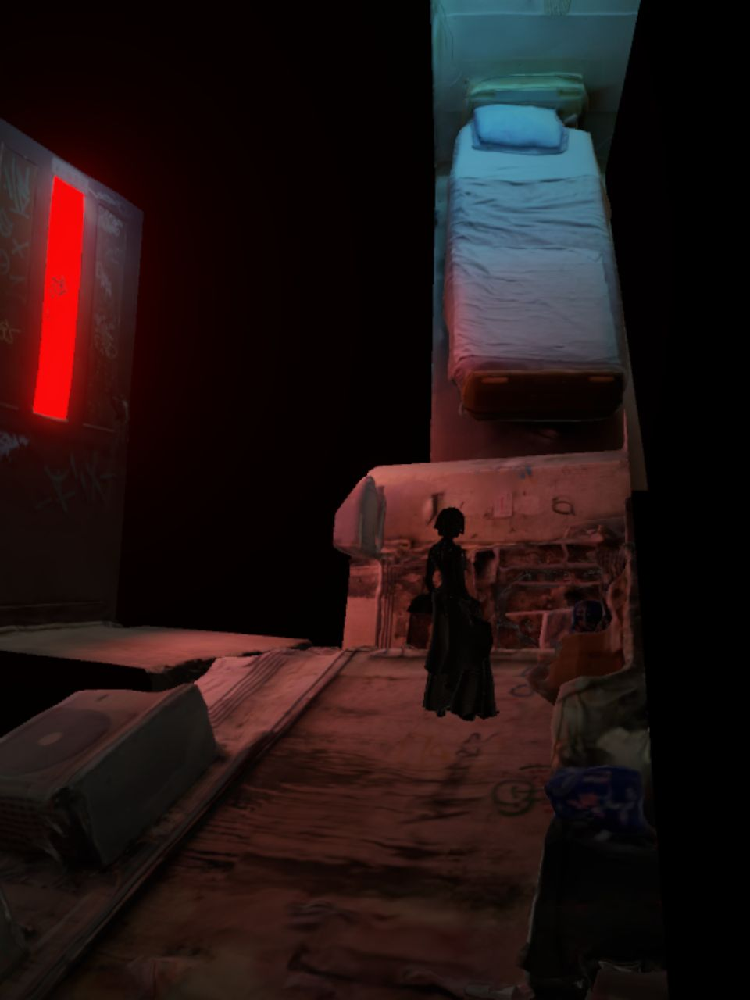
Chapter 3 — The Garden of Archetypes
In the Garden of Archetypes, the environment turns into a magical place of psychic discovery. Players explore a surreal garden inhabited by creatures that embody Jungian archetypes, universal symbols connected to deeply shared human experiences.
By collecting symbols scattered across the ground, players weave a personal path that connects them to the depths of the collective unconscious. The garden is not only visually enchanting; it also invites an inner exploration, where the encounter with archetypes leads towards a deeper understanding and integration of the self.
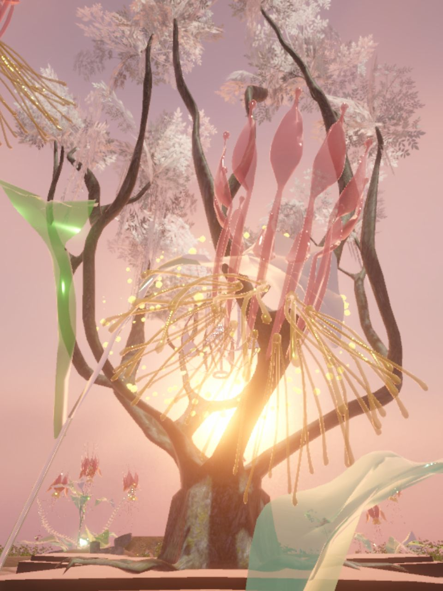
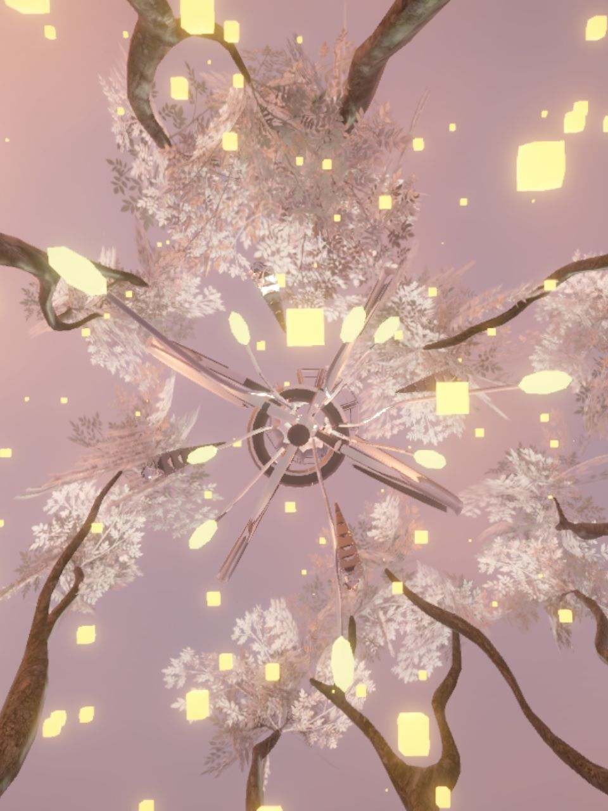
Chapter 4 — Embracing the Self
In the final chapter of Redmoon Traum, the player reaches the culmination of the journey of self-discovery. Crossing a suspended bridge, they arrive at a luminous mandala placed at the centre of a mysterious lake.
This sphere of light represents both the inner universe of the soul and the journey completed through the unconscious. The moment marks the peak of the individuation process: the integration of different parts of the self and the achievement of inner harmony. The return to the beginning becomes a symbol of rebirth and a new start, enriched by a deeper understanding of oneself and the world.
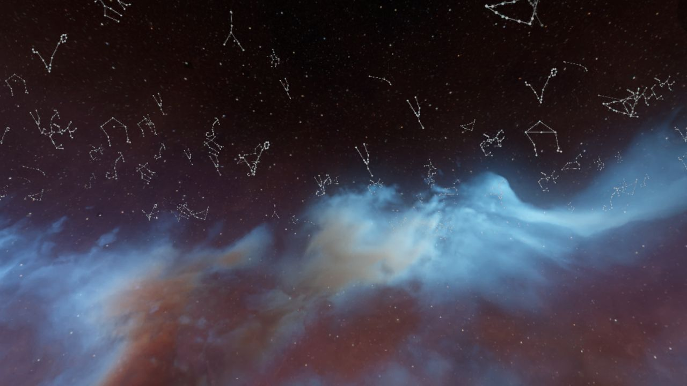
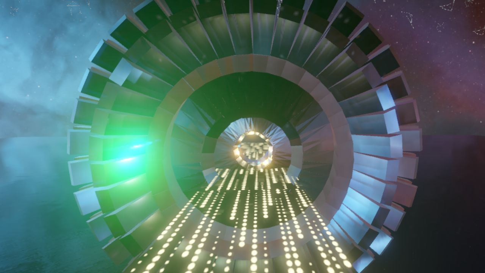